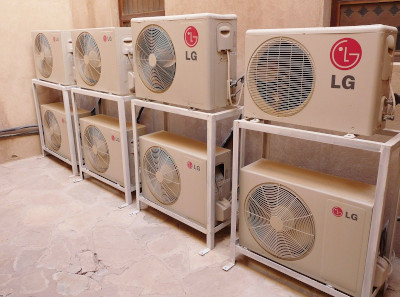

Potencial ar > Qualidade no serviço prestadoos
O conforto que você meresse!
Atualizado em Maio de 2020
Potencial AR
Especializada em ar condicionado, contamos com funcionários capacitados para instalação, manutenção e higienização de ar condicionado.
Setores de atuação:- - residenciais,
- - comerciais,
- - industriais.
Instalação de ar condicionado:
Instalação de ar condicionado em São Paulo e Grande São Paulo. Contamos com equipe própria, com instaladores de ar condicionado altamente capacitados, ótima estrutura e equipamentos de qualidade.
Trabalhamos com diversas marcas e tipos de ar condicionado. Solicite a avaliação do seu ambiente e escolha as melhores opções de ar condicionado.
Solicite um orçamento ou agende uma visita. Clique aqui e fale conosco 